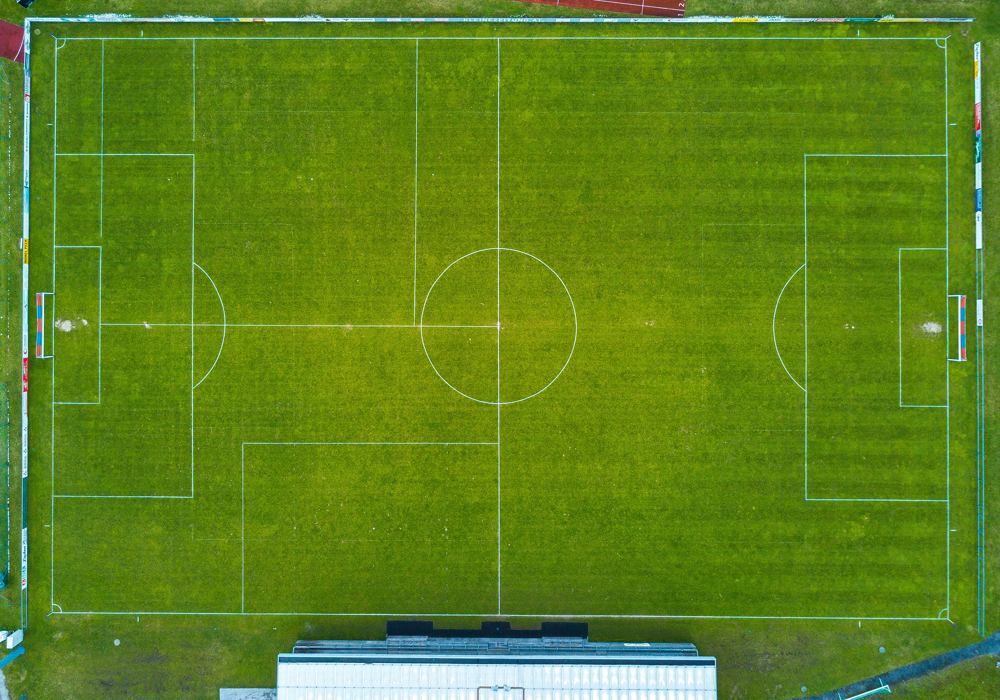

It was discussed in the introductory page that a football team consists of 11 players, 1 of which is always fixed as the goalkeeper. The remaining 10 players can be positioned in different ways, and the most popular of these will be introduced in this page.
The 4-4-2 is the most basic formation that is deployed by football teams throughout the world. It is a very balanced formation and players are spread out well across the field. However, this formation is very physically taxing, especially if the full backs attack as well because they would have to track back to defend after an offensive.
The 4-3-3 formation is extremely offensive and relies heavily on passing. The main idea of the 4-3-3 formation is not balance but offense. It only works when the 4 defenders are really good and confident.
4-5-1 is a formation that relies heavily on its midfield to dictate and win the game. This strategy can be used in 2 ways, one as a mainstay and the other as a counteractive formation.